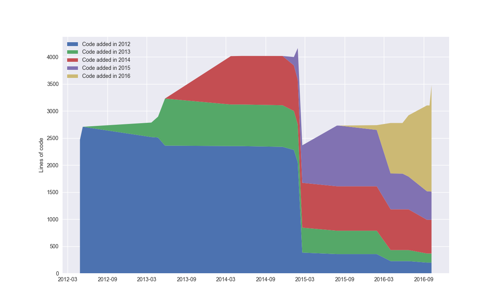
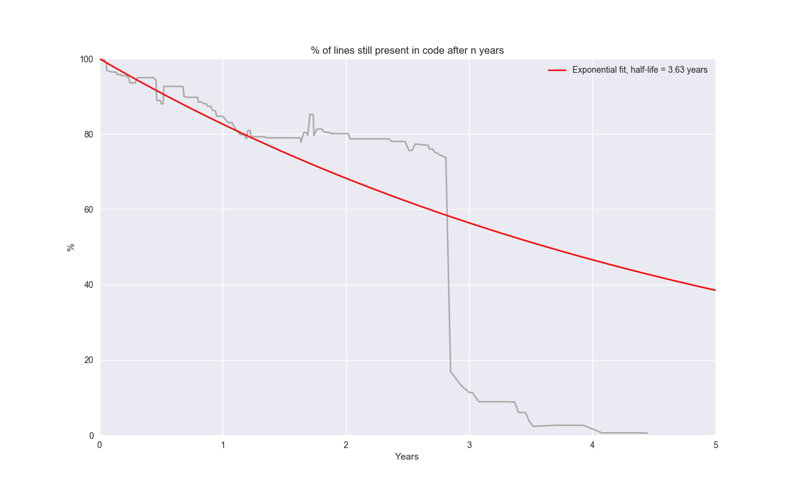

PENF
PENF 


PENF, Portability Environment for Fortran poor people
A KISS library for exploiting codes portability for modern (2003+) Fortran projects.
- PENF is a pure Fortran (KISS) library for achieving portable codes for modern Fortran projects;
- PENF provides many number-to-string and
viceversafacilities; - PENF is Fortran 2003+ standard compliant;
- PENF is a Free, Open Source Project.
Table of Contents
Issues

Compiler Support


What is PENF?
Fortran is the most popular programming language for scientific computing. With Fortran it is quite simple obtain fast code and manage large multidimensional array. Because Fortran permits the achievement of high performance it is also used on great range of different computer-architectures, and often on the fastest supercomputer in the world. Therefore Fortran programs must be portable: portability means that the code will give the same results on every different computer-architectures. One of the most important goal of the numeric code is to control the numeric error due to finite precision of numerical operations. Fortran uses the IEEE representations. Integers and reals (floating point) are represented with a finite precision. So when the code computes an operation it has a truncation error due to the truncation of the numerical finite representations. For numerical and more in general scientific applications this source of errors must be controlled. The programmer must know which is the precision associated to the code variables. Before the standard Fortran 90/95 there are not any way to select the precision of the numerical variables in a portable fashion.
Modern Fortran standards (2003+) have introduced better support for codes portability. With the possibility to specify a kind parameter for variables, the standard Fortran 90+ makes available useful functions to select the kind precision in a portable parametric way. Using these functions the programmer can accurately control the precision of its own variables in a portable manner.
PENF module provides an effective KISS library to achieve portability and concurrently it provides many tools to handles parametrized numbers.
Go to Top
Main features
The library provides portable kind-parameters and many useful procedures to deal with them:
- [X] integer and reals parameters for 1,2,4,8,16 bytes-like representations;
- [X] integer and real formats definitions for all parameters;
- [X] integer and real minimum maximum representable numbers;
- [X] number-to-string and string-to-number casting procedures;
- [X] endianism procedures checking.
Any feature request is welcome.
Go to Top
Copyrights
PENF is an open source project, it is distributed under a multi-licensing system:
- for FOSS projects:
- GPL v3;
- for closed source/commercial projects:
- BSD 2-Clause;
- BSD 3-Clause;
- MIT.
Anyone is interest to use, to develop or to contribute to PENF is welcome, feel free to select the license that best matches your soul!
More details can be found on wiki.
Go to Top
Documentation
Besides this README file the PENF documentation is contained into its own wiki. Detailed documentation of the API is contained into the GitHub Pages that can also be created locally by means of ford tool.
A Taste of PENF
To be written.
Go to Top
Project history
See CHANGELOG for the complete list of changes.
a graphical overview of the history and evolution of PENF project


Go to Top